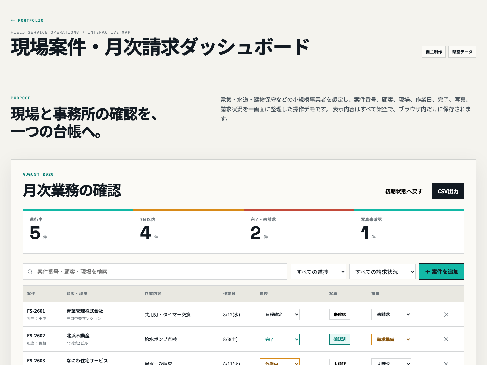

INTERACTIVE DEMO FOCUS CASEField Service Operations
案件台帳・作業完了・
月次請求管理デモ
- 01想定課題
- 受付はメール、予定はカレンダー、写真は共有フォルダ、請求対象はExcelとなり、完了後の確認と月末集計に手戻りが生じる。
- 02実装
- 案件、担当、期限、作業状態、写真確認、請求状態を一画面へ集約。絞り込み、直接更新、CSV出力を架空データで操作できます。
- 03狙い
- 「完了したが未請求」「写真未確認」「期限接近」を先に見つけ、既存Excelを残したまま転記と確認漏れを減らす設計です。
- 自主制作
- 架空データ
- HTML / CSS / JavaScript
- CSV出力